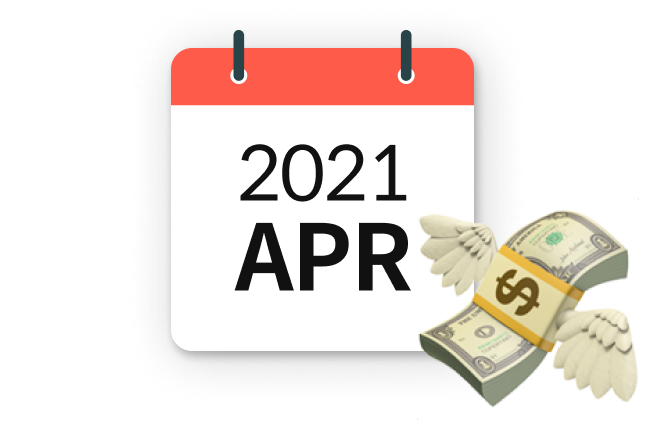
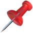

보험료,
4월부터 더 비싸집니다.


세줄 요약
- 저금리 때문에 보험사가 돈을 굴려 수익을 낼 수 없음
- 수익을 낼 수 없으면 보상 지급을 해주기가 어려움
- 삼0생명, 동0생명 등 보험사들이 4월부터 보험료를 인상
누구에게 중요한 소식인가요?
- 보험 리모델링, 보험 다이어트를 미루고 계셨던 분
- 보험 가입 계획이 있으신 분
이 글을 읽으면 무엇을 해야하나요?
- 보험료가 오르기 전, 즉 4월 이전에 보험에 가입해야 한다고 생각할거에요.
하필 4월부터 보험료가 오르는 이유는, 대다수의 보험사가 3월 결산을 하기 때문입니다. 1년 사업의 결과를 3월 말에 집계하고, 이후에는 내년을 위한 상품개정을 합니다. 여기서 우리에게 중요한 건 ‘언제 결산을 하느냐’보다, ‘어떻게 개정되느냐’겠죠. 4월부터는 지금과 같은 가격으로 받을 수 있는 보험 혜택이 줄어들 예정이에요. 달리 말하면, 같은 보험의 혜택도 4월 이후에는 더 큰 비용을 지불해야만 얻을 수 있다는 이야기죠.
보험사는 보험금을 어떻게 마련할까요? 고객에게서 받은 돈을 굴려서 마련합니다. 여기서 ‘돈을 굴려 만들어내는 예상 수익률’을 ‘예정이율’이라고 합니다. 지금은 이 예정이율이 점점 줄어드는 상황이라고 해요. 예전에는 금리가 높아서 적은 돈을 가지고도 돈을 꽤 벌 수 있었는데, 지금은 아니거든요. 돈을 굴려도 금리가 낮아 많이 벌 수가 없으니, 고객에게서 받는 금액을 더 올리려고 하는 거예요.
그래서 대다수의 보험사가 4월에 가격 인상을 예고하고 있습니다. (삼0생명, 동0생명, 미래00생명 등. 물론 가격 인상이 없는 보험사도 있어요.) 인상되는 금액이 비록 한 달에 몇 천 원, 몇 만 원 차이라고 해도 20년, 30년 동안 내는 것을 생각하면 아주 큰 차이가 발생합니다. 만약 보험 가입을 고려하고 계신 분이라면 이 점 꼭 챙기시길 바랄게요!